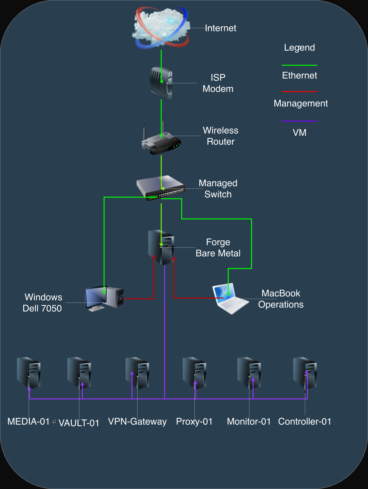

Architecture of the PatrickHomeLab environment including virtualization, storage, monitoring, automation, and secure remote access.
PatrickHomeLab is centered around a Dell Precision 3630 running Proxmox and supporting a collection of virtual machines for media services, secure remote access, centralized storage, monitoring, reverse proxy services, and Ansible-based infrastructure automation.

Public-facing topology intentionally omits internal IP addresses and sensitive network details while preserving the overall infrastructure design.
Dell Precision 3630 running Proxmox as the primary hypervisor for the entire PatrickHomeLab environment.
Hosts Plex and media-related services for centralized streaming and content management.
Provides secure remote access to the lab using WireGuard.
Provides centralized storage, NFS shares, and backup services for the environment.
Acts as the reverse proxy and HTTPS entry point for published and internal services.
Runs monitoring and observability services using Prometheus and Grafana.
Runs Ansible automation, patching, and infrastructure management tasks.
The MacBook Operations system and Windows 11 Dell 7050 workstation are used for remote and local administration of the environment.